1.849 cancionesen 6 cancioneros, todas también en inglés
Sin internetfunciona solo con el computador
1¿Qué es PK-PENTECOSTAL?
PK-PENTECOSTAL es un programa para proyectar durante los cultos:
Versículos de la Biblia: Reina Valera 1960, NVI, NTV, DHH, TLA, PDT y versiones en inglés (KJV, WEB y BBE).
Letras de canciones, himnos y coros de seis cancioneros (Himnario Lluvias de Bendición, Manantial de Inspiración, Corario IPUC, Infantiles, Mi Cancionero y Canciones).
Anuncios y textos libres escritos en el momento.
Rótulos con nombres (predicador, cantantes, eventos) para la transmisión en vivo.
Todo se maneja desde un panel de control que se abre en el navegador (Chrome o Edge). Ese mismo panel envía el contenido a:
El proyector o televisor de la iglesia (pantalla completa con fondo).
OBS Studio, para la transmisión por Facebook o YouTube (tercio inferior, banner y rótulos).
Uno o varios celulares, desde donde también se puede manejar todo (capítulo 13).
Y además el programa completo, las Biblias y las canciones se pueden poner en inglés con un clic (capítulo 14), para llevar la Palabra a quienes solo hablan inglés.
¿Cómo funciona por dentro?El programa enciende un pequeño servidor en el computador (dirección http://localhost:8888). El panel, el proyector, OBS y los celulares se conectan a él, por eso todo cambia al mismo tiempo. No necesita internet para funcionar, ni siquiera para traducir.
2Instalación (una sola vez)
Requisito: Node.js
PK-PENTECOSTAL necesita Node.js, un programa gratuito. Solo se instala una vez.
Abra PK-PENTECOSTAL.vbs. Si Node.js no está instalado, el programa le avisa y abre la página de descarga automáticamente (nodejs.org/es/download).
Descargue la versión LTS (la recomendada) para Windows.
Ejecute el instalador y pulse Siguiente en todas las ventanas hasta Finalizar. No hace falta cambiar ninguna opción.
Vuelva a abrir PK-PENTECOSTAL.vbs. Ya debe abrir el panel.
Crear el acceso directo en el Escritorio
Entre a la carpeta PK-PENTECOSTAL.
Haga doble clic en Crear acceso directo (Windows).vbs.
Aparecerá en el Escritorio el ícono PK-PENTECOSTAL con el logo de la IPUC. Desde ahora abra el programa con ese ícono.
ConsejoSi el ícono no muestra el logo, vuelva a ejecutar “Crear acceso directo”. Windows a veces tarda en refrescar los íconos.
Contenido de la carpeta
Al abrir la carpeta PK-PENTECOSTAL solo se ve lo que se usa a diario:
Lo que se ve
Para qué sirve
PK-PENTECOSTAL.vbs
Abre el programa (forma normal).
PK-PENTECOSTAL.bat
Abre el programa con una ventana negra que muestra los errores. Úselo solo si algo falla.
Crear acceso directo (Windows).vbs
Crea el ícono en el Escritorio.
Manual PK-PENTECOSTAL.pdf
Este manual.
fondos
Imágenes y videos de fondo, organizados en subcarpetas. Aquí puede agregar los suyos.
Imagenes
Fondos de pantalla de PK-PENTECOSTAL y pantallas de bienvenida y cierre.
El resto de carpetas (PK-PENTECOSTAL, biblias, cancioneros, css…) están ocultas para que nadie las borre por error. El programa las usa normalmente. Para verlas: en el Explorador, Vista → Mostrar → Elementos ocultos.
No borre, mueva ni cambie el nombre de las carpetas ocultasSi oculta una carpeta usted mismo, en la ventana de Windows elija “Aplicar cambios solo a esta carpeta”. Si elige “a subcarpetas y archivos”, el programa no podrá guardar canciones ni ajustes.
3Abrir y cerrar el programa
Abrir en Windows
Haga doble clic en el ícono PK-PENTECOSTAL del Escritorio (o en PK-PENTECOSTAL.vbs).
Aparece el aviso “Iniciando PK-PENTECOSTAL… Espere por favor”.
En unos segundos se abre el panel de control en el navegador.
Si el programa ya estaba abierto, abrirlo otra vez solo vuelve a mostrar el panel; no inicia una segunda copia.
ImportanteNo abra el Proyektor original al mismo tiempo. Los dos usan la misma “puerta” (puerto 8888) y PK-PENTECOSTAL no podrá iniciar.
Abrir en Mac o Linux
Los archivos iniciar-mac.command e iniciar-linux.sh están entre las carpetas ocultas (vea el capítulo 2).
Mac: doble clic en iniciar-mac.command. La primera vez: clic derecho → Abrir. Si dice que no tiene permisos, en la Terminal escriba chmod +x iniciar-mac.command.
Linux: en una terminal dentro de la carpeta: chmod +x iniciar-linux.sh (solo la primera vez) y luego ./iniciar-linux.sh. Con ./iniciar-linux.sh --instalar queda en el menú de aplicaciones.
Cerrar el programa
Pulse el botón ⏻ (arriba a la derecha del panel).
Confirme con Aceptar. Se detiene el servidor y aparece “PK-PENTECOSTAL se cerró”.
Ya puede cerrar la pestaña del navegador.
OjoAl cerrar el programa, el proyector, OBS y los celulares dejan de recibir texto. Ciérrelo solo al terminar el culto.
4Conociendo la pantalla principal
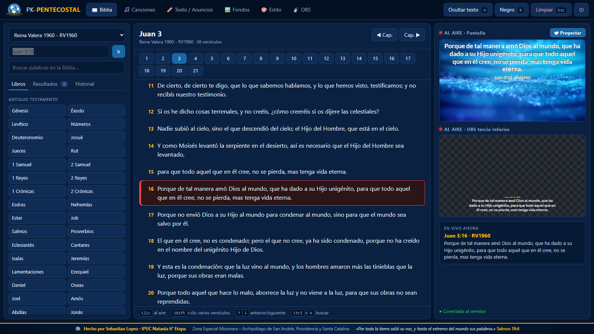
Figura 1. Panel de control con un versículo al aire (Juan 3:16).
Controles en vivo (a la derecha): 📱 CelularOcultar textoNegroLimpiar⏻. Se explican en el capítulo 10.
B. Columna izquierda: la biblioteca
Cambia según la pestaña elegida: libros de la Biblia, lista de canciones, cuadro de texto, galería de fondos, ajustes de estilo o idiomas.
C. Columna central: el contenido
Muestra los versículos del capítulo, las estrofas de la canción o las diapositivas del anuncio. Un clic en cualquiera lo manda al aire. Lo que está al aire se marca con borde rojo.
D. Columna derecha: los monitores
AL AIRE · Pantalla: lo que se ve en el proyector. Tiene el botón 📽 Proyectar.
AL AIRE · OBS tercio inferior: lo que se ve en la transmisión.
En vivo ahora: la referencia y el texto que están al aire.
Abajo, el estado de conexión: ● Conectado al servidor.
En la parte inferior del panel aparece la franja de créditos del programa con el versículo de Salmos 19:4. Esta franja no se ve en el proyector ni en OBS.
5Biblia: proyectar versículos
Forma rápida: escribir la cita
Haga clic en la pestaña 📖 Biblia.
Elija la versión en la lista superior (por ejemplo Reina Valera 1960).
En el cuadro de referencia escriba la cita y pulse Enter o Ir.
El capítulo se abre en el centro y el versículo buscado queda resaltado.
Haga clic sobre el versículo para mandarlo al aire.
Formas válidas de escribir la cita (acepta abreviaturas, con o sin tildes, y también los nombres de los libros en inglés):
Escriba…
Resultado
Juan 3:16 o jn 3 16
Juan capítulo 3, versículo 16
Juan 3:16-18
Versículos 16 al 18 juntos
sal 23 o psalm 23
Salmo 23 completo (capítulo)
1 co 13:4-7
1 Corintios 13:4 al 7
john 3:16
Juan 3:16 (nombre en inglés)
AtajoPulse Ctrl + K en cualquier momento para ir directo al cuadro de búsqueda de cita.
Forma visual: libro y capítulo
En la sub-pestaña Libros haga clic en el libro (Antiguo o Nuevo Testamento).
Arriba del centro aparecen los números de capítulo: pulse el que necesite.
Use ◀ Cap. y Cap. ▶ para pasar al capítulo anterior o siguiente.
Clic en el versículo para mandarlo al aire.
Varios versículos a la vez
Haga clic en el primer versículo y luego Shift + clic en el último. Se proyectan todos juntos; el tamaño de la letra se ajusta solo para que quepan.
Avanzar durante la predicación
Con un versículo al aire, use ↓ / → / Espacio para el siguiente y ↑ / ← para el anterior. Al llegar al último versículo pasa solo al capítulo siguiente.
Buscar palabras
Escriba una o varias palabras en “Buscar palabras en la Biblia…” (por ejemplo amor paciente).
Los resultados aparecen en la sub-pestaña Resultados (el número indica cuántos hay).
Clic en un resultado para abrir ese capítulo.
Historial
La sub-pestaña Historial guarda los versículos que ya se proyectaron en el culto. Clic en uno para volver a él rápidamente.
6Canciones: proyectar, crear y editar
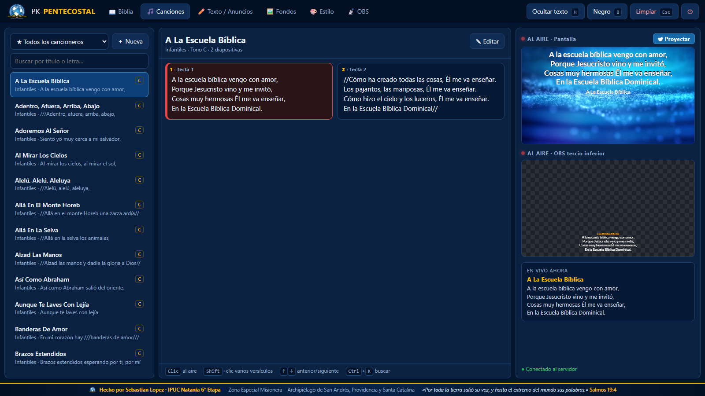
Figura 2. Una canción abierta: cada estrofa es una diapositiva.
Proyectar una canción
Haga clic en la pestaña 🎵 Canciones.
Elija el cancionero en la lista superior (Himnario, Corario, Infantiles…).
Escriba en “Buscar por título o letra…” parte del título o una frase de la letra.
Clic en la canción: sus estrofas aparecen en el centro como diapositivas numeradas. (Doble clic la abre y proyecta la primera estrofa).
Clic en una estrofa para mandarla al aire.
Avance con ↓ o Espacio, o pulse el número de la estrofa (1 a 9) para saltar directamente a ella (útil para repetir el coro).
Crear una canción nueva
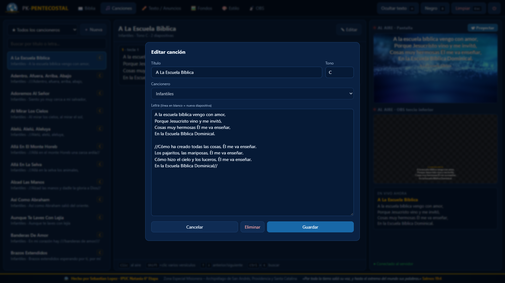
Figura 3. Editor de canciones.
En la pestaña Canciones pulse ＋ Nueva.
Escriba el Título y, si quiere, el Tono (por ejemplo C, Re menor).
Elija en qué Cancionero se guardará.
Escriba o pegue la Letra. Deje una línea en blanco entre estrofas: cada bloque será una diapositiva.
Opcional: llene Título en inglés y Letra en inglés, o pulse 🤖 Traducir automáticamente (capítulo 14).
Pulse Guardar.
Editar o eliminar una canción
Abra la canción y pulse ✎ Editar (arriba a la derecha del centro).
Corrija lo necesario y pulse Guardar, o Eliminar para borrarla.
Copias de seguridad automáticasCada vez que se edita un cancionero, el programa guarda una copia anterior en la carpeta PK-PENTECOSTAL\respaldos. Si se equivoca, puede recuperar la versión anterior desde allí.
7Texto y anuncios
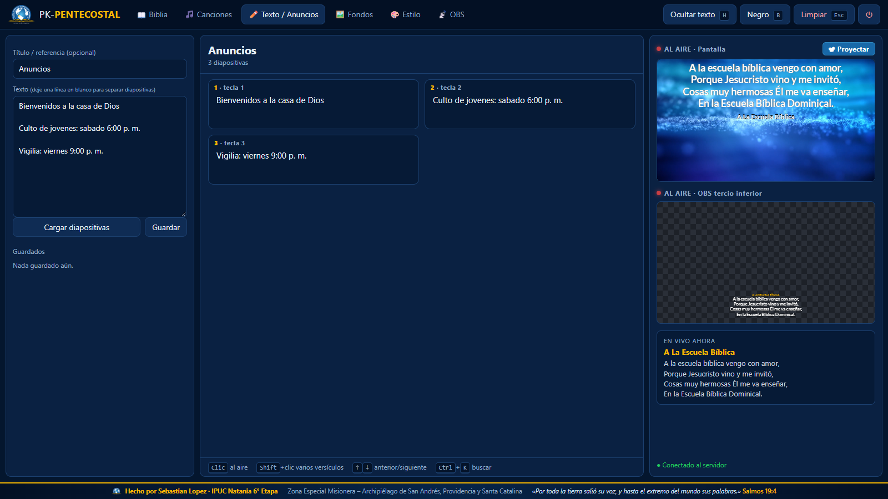
Figura 4. Anuncios divididos en tres diapositivas.
Haga clic en la pestaña ✏️ Texto / Anuncios.
En Título / referencia escriba un título opcional (ej.: Anuncios, Tema de hoy, el nombre del predicador). Se muestra como referencia debajo del texto.
En Texto escriba el contenido. Una línea en blanco separa las diapositivas.
Pulse Cargar diapositivas: aparecen en el centro.
Clic en cada diapositiva para mandarla al aire (o use las flechas y los números 1–9).
Pulse Guardar si quiere usarlo otro día. Queda en la lista Guardados; clic para volver a cargarlo y ✕ para borrarlo.
Ideas de usoBienvenida, anuncios de la semana, el tema y la cita base de la predicación, motivos de oración, el número de cuenta para ofrendas, el nombre de los cantantes.
8Fondos
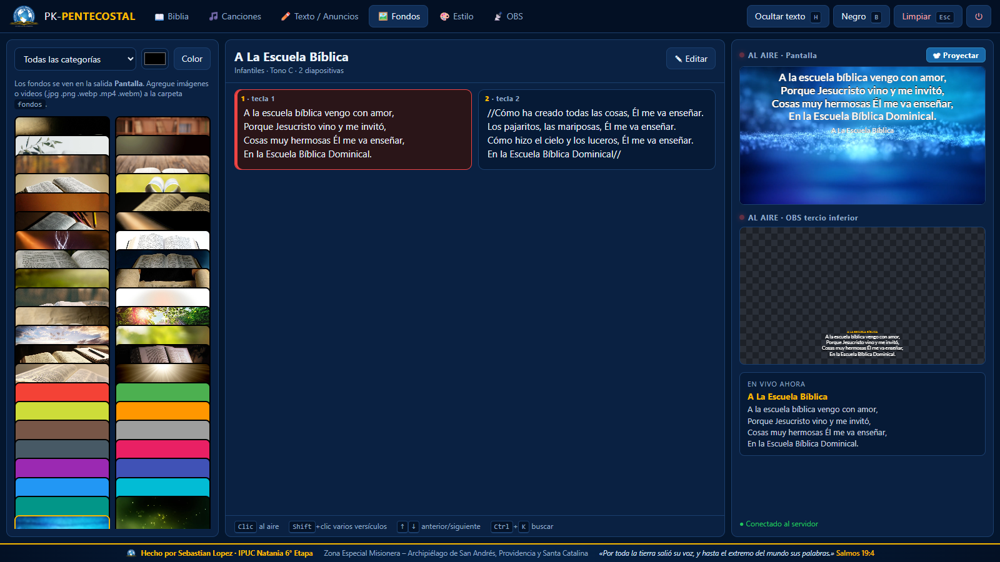
Figura 5. Galería de fondos.
El fondo se ve detrás del texto en la salida Pantalla (proyector).
Haga clic en la pestaña 🖼️ Fondos.
Elija una categoría en la lista (Biblias, Colores, Videos, Favoritos…).
Clic en una imagen o video: el fondo cambia al instante, aunque haya texto al aire. Los videos se repiten en bucle y sin sonido.
Para un color sólido: elija el color en el cuadrito y pulse Color.
Agregar sus propios fondos
Copie imágenes (.jpg .png .webp) o videos (.mp4 .webm) dentro de la carpeta fondos, en una subcarpeta existente o en una nueva (cada subcarpeta es una categoría).
Vuelva a la pestaña Fondos (o recargue la página con F5) y aparecerán.
ConsejoUse imágenes oscuras o poco cargadas para que el texto se lea bien, o suba el ajuste Oscurecer fondo en la pestaña Estilo. Para videos, prefiera resolución 1920×1080.
9Estilo: cómo se ve el texto
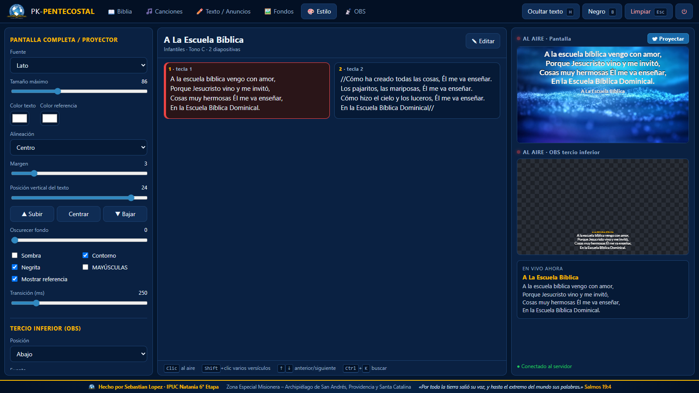
Figura 6. Pestaña Estilo.
En la pestaña 🎨 Estilo se ajusta la apariencia del texto. Todos los cambios se ven al instante en los monitores y quedan guardados automáticamente.
Hay dos grupos de ajustes:
Pantalla completa / Proyector: lo que se ve en el proyector.
Tercio inferior (OBS): la barra que se ve en la transmisión.
Al final está Restaurar estilo por defecto para volver a los valores de fábrica.
Pantalla completa / Proyector
Ajuste
Qué hace
Fuente
Tipo de letra.
Tamaño máximo
Tamaño más grande permitido. El programa achica la letra solo si el texto es largo, para que siempre quepa.
Color texto / Color referencia
Color del versículo o letra, y de la cita (ej. “Juan 3:16 · RV1960”).
Alineación
Centro, izquierda o justificado.
Margen
Espacio libre alrededor del texto, en los bordes de la pantalla.
Posición vertical del texto
Sube o baja el texto en la pantalla. Valores positivos = más arriba; negativos = más abajo; 0 = centrado. Use el deslizador o los botones ▲ SubirCentrar▼ Bajar.
Oscurecer fondo
Oscurece la imagen o video de fondo para que el texto resalte.
Sombra / Contorno
Sombra o borde negro alrededor de las letras (mejora la lectura sobre fondos claros).
Negrita / MAYÚSCULAS
Letra gruesa / todo en mayúsculas.
Mostrar referencia
Muestra u oculta la cita bíblica o el título de la canción.
Transición (ms)
Duración del efecto al cambiar de diapositiva (0 = cambio instantáneo).
¿Cuándo subir o bajar el texto?Si el púlpito, los músicos o las cabezas de los hermanos tapan la parte baja de la pantalla, suba el texto. Si la parte de arriba del proyector queda cortada, bájelo.
Tercio inferior (OBS)
Ajuste
Qué hace
Posición
Abajo, arriba o centro de la imagen de la transmisión.
Fuente / Tamaño máximo
Tipo y tamaño de letra de la barra.
Ancho (%) / Alto (%)
Tamaño de la barra respecto a la pantalla.
Colores
Texto, barra, acento (franja lateral) y referencia.
Opacidad barra / Bordes redondeados
Transparencia y redondeo de la barra.
Mostrar barra, Sombra, MAYÚSCULAS, Mostrar referencia
Opciones de presentación.
10Controles en vivo
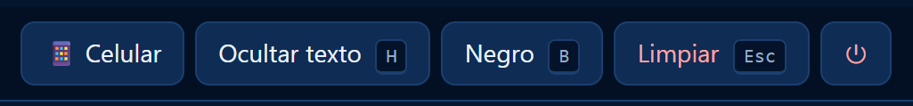
Figura 7. Controles en vivo, siempre arriba a la derecha.
Están siempre visibles y funcionan desde cualquier pestaña:
Botón
Tecla
Qué hace
📱 Celular
—
Muestra el código QR para manejar el programa desde el teléfono (capítulo 13).
Ocultar texto
H
Oculta el texto pero deja el fondo. Pulse otra vez para mostrarlo. Útil durante la oración.
Negro
B
Pone la pantalla del proyector totalmente negra. Pulse otra vez para volver.
Limpiar
Esc
Quita del aire el versículo, estrofa o anuncio actual (queda solo el fondo).
⏻
—
Cierra el programa (ver capítulo 3).
11Proyectar en el proyector o TV de la iglesia
Figura 8. Así se ve la salida en el proyector.
Paso 1: conectar y extender la pantalla (Windows)
Conecte el proyector o TV al computador (HDMI o VGA) y enciéndalo.
Pulse Windows + P y elija Extender. Así el proyector funciona como una segunda pantalla y usted conserva el panel en su monitor. (No use “Duplicar”, porque el público vería el panel de control).
Paso 2: pulsar “Proyectar”
En el monitor AL AIRE · Pantalla (columna derecha) pulse 📽 Proyectar.
La primera vez, Chrome o Edge preguntan si permite “administrar ventanas en todas las pantallas”. Responda Permitir.
La salida se abre sola en la segunda pantalla y en pantalla completa.
El botón cambia a ⏹ Detener mientras se está proyectando. Púlselo para cerrar la ventana del proyector.
Si no se abre sola en el proyector
Pasa si se negó el permiso, si usa otro navegador, o si no hay segunda pantalla detectada. Entonces se abre una ventana normal:
Arrastre la ventana hasta la pantalla del proyector.
Haga doble clic dentro de ella, o pulse F o F11, para ponerla en pantalla completa.
Puede seguir controlando desde la ventana del proyectorSi por error hizo clic en la ventana del proyector, las teclas ↑↓←→EspacioBH y 1–9 siguen funcionando igual que en el panel.
Recuperar el permisoSi respondió “Bloquear” por error: en Chrome haga clic en el candado a la izquierda de la dirección localhost:8888 → Administración de ventanas → Permitir, y recargue con F5. Si el navegador bloquea la ventana emergente, permita “Ventanas emergentes” para este sitio de la misma forma.
También puede abrir el proyector desde 📡 OBS → 🔗 URLs para OBS → Abrir ventana de proyector; funciona igual que el botón Proyectar.
12Uso con OBS Studio (transmisión)
La pestaña 📡 OBS tiene tres secciones: ◧ OVERLAY · Rótulos, ▬ BANNER y 🔗 URLs para OBS.
12.1 Añadir PK-PENTECOSTAL a OBS (forma manual)
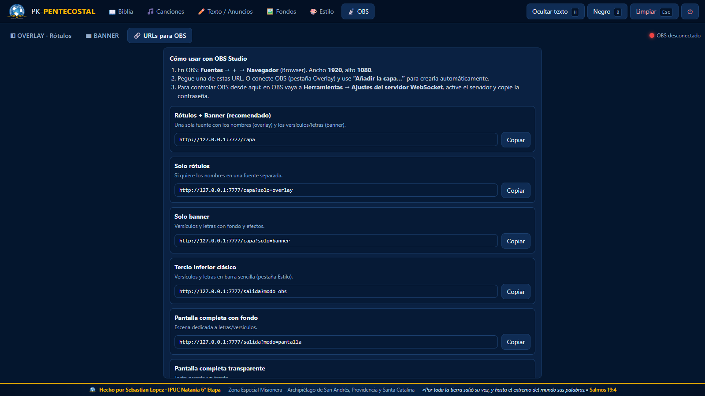
Figura 9. Direcciones para OBS.
En el panel vaya a 📡 OBS → 🔗 URLs para OBS y pulse Copiar en la dirección que necesite.
En OBS: en Fuentes pulse ＋ → Navegador (Browser) → póngale un nombre → Aceptar.
Pegue la URL, escriba Ancho 1920 y Alto 1080 → Aceptar.
Dirección
Uso
localhost:8888/capa
Recomendada. Rótulos + banner en una sola fuente.
localhost:8888/capa?solo=overlay
Solo los rótulos de nombres.
localhost:8888/capa?solo=banner
Solo el banner (versículos/letras con fondo y efectos).
/salida?modo=obs
Tercio inferior clásico (se ajusta en la pestaña Estilo).
/salida?modo=pantalla
Pantalla completa con fondo (escena dedicada a la letra).
/salida?modo=pantalla&fondo=0
Pantalla completa sin fondo (transparente).
/salida?modo=chroma
Fondo verde para mezcladores (ATEM, vMix).
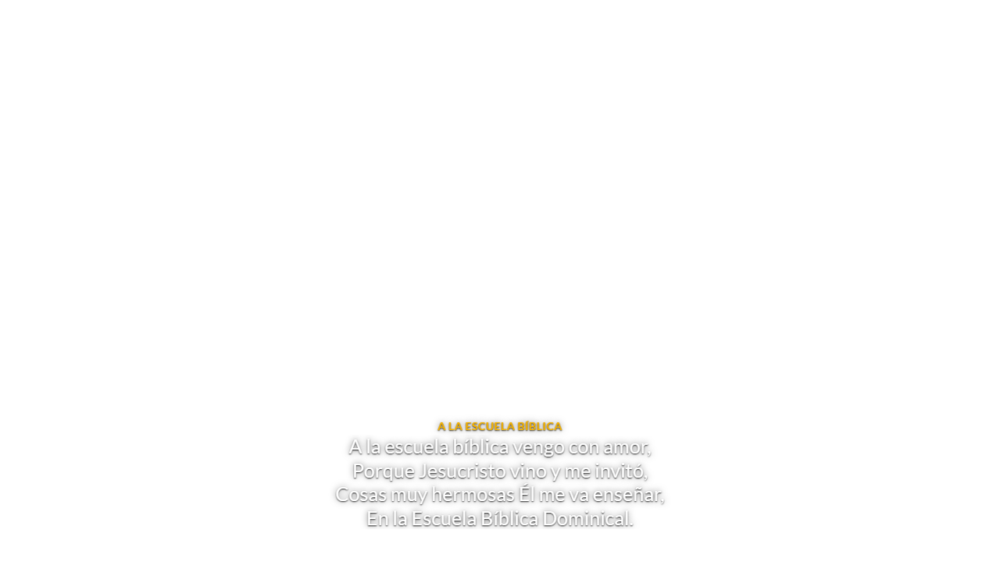
Figura 10. Tercio inferior clásico (fondo transparente en OBS).
12.2 Conectar el panel con OBS (control remoto)
Permite manejar OBS desde el panel: botón TRANSMITIR, escenas, cámaras y audio. Requiere OBS 28 o superior.
En OBS: menú Herramientas → Ajustes del servidor WebSocket. Marque Habilitar servidor WebSocket. Pulse Mostrar información de conexión y copie la contraseña.
En el panel: 📡 OBS → OVERLAY, en el cuadro “OBS desconectado” pulse el engranaje ⚙.
Pegue la contraseña y pulse Conectar. El punto se pone verde.
Pulse ＋ Añadir la capa de rótulos/banner a la escena actual para que el programa cree la fuente en OBS automáticamente.
Ya conectado, puede:
Iniciar o detener la transmisión con ● TRANSMITIR.
Cambiar de escena con un clic (con miniaturas, transiciones y opción Cambiar con stinger).
Programar el cambio automático de escena (⏱ Temporizador).
Cámaras: añadir y elegir el dispositivo de cada cámara.
Sonido de la transmisión: volumen, silencio, vúmetros y añadir fuentes de audio.
12.3 OVERLAY · Rótulos de nombres
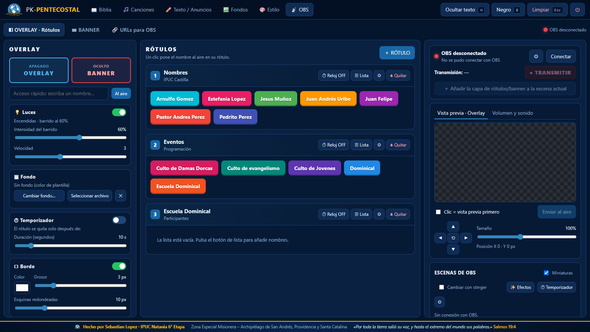
Figura 11. Rótulos organizados por grupos.
Los rótulos son los letreros con el nombre de quien está en la plataforma (predicador, cantantes, eventos).
Poner y quitar un nombre
Haga un clic en el botón del nombre: sale al aire en OBS y el botón muestra ● AL AIRE.
Otro clic en el mismo nombre lo quita. También puede usar ⏏ Quitar del grupo.
Para escribir un nombre que no está en la lista: escríbalo en Acceso rápido y pulse Al aire.
NotaLa tecla Esc no quita los rótulos (Esc es para la Biblia y canciones).
Organizar los rótulos
＋ RÓTULO: crea un grupo nuevo (ej.: Nombres, Eventos, Escuela Dominical).
☰ Lista: agregar, editar, cambiar color, ordenar (▲▼) o eliminar nombres. Puede pegar muchos nombres a la vez, uno por línea.
⚙ Ajustes del grupo: nombre del grupo, texto por defecto (lo que sale debajo del nombre, ej. “IPUC Castilla”), color para nombres nuevos o eliminar el grupo.
Reloj OFF/ON: con ON, los nombres del grupo se quitan solos después del tiempo del Temporizador.
Apariencia del rótulo (columna izquierda)
Luces: barrido de luz sobre el rótulo (intensidad y velocidad).
Fondo: imagen de fondo del rótulo.
Temporizador: segundos antes de que se quite solo.
Borde: color, grosor y esquinas.
Stinger: barrido de color antes de que aparezca el rótulo.
Plantilla: IPUC-Blanco, Azul Noche, Oscuro Minimal, Rojo Moderno, Cristal o Color pleno; y la forma de aparecer (progresiva, deslizamiento o instantánea).
Vista previa · Overlay (derecha): arrastre el rótulo con el mouse o use las flechas y el control de Tamaño para ubicarlo. Con “Clic = vista previa primero” el nombre se revisa antes de pulsar Enviar al aire.
OVERLAY y BANNERLos botones grandes OVERLAY y BANNER ocultan o muestran cada capa sin borrar su contenido.
12.4 BANNER · Versículos y letras en la transmisión
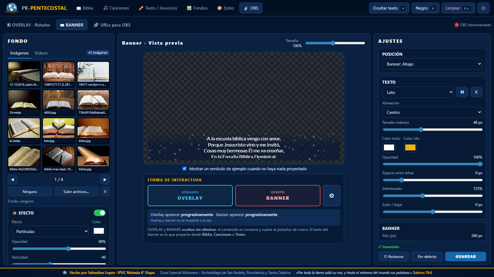
Figura 12. Configuración del banner.
El banner muestra en OBS lo que usted proyecte desde Biblia, Canciones o Texto, con fondo y efectos.
Fondo (izquierda): elija una imagen o video, o Subir archivos… para agregar los suyos (quedan en fondos\Subidos). Ninguno lo quita.
Efecto: partículas, nieve, bokeh, estrellas o rayos, con color, opacidad, velocidad e intensidad.
Ajustes (derecha): posición (abajo o lateral), fuente, negrita/cursiva, alineación, tamaño, colores, espacio entre letras, interlineado, subir/bajar; alto del banner, margen, color y opacidad del fondo, desenfoque y transición.
Forma de interactuar: cómo aparecen overlay y banner, y si se permite que se vean a la vez cuando los dos van abajo.
Los cambios se ven al instante. Pulse GUARDAR para conservarlos (o Ctrl + S). Restaurar deshace los cambios sin guardar y Por defecto vuelve a los valores de fábrica.
13Control desde el celular (código QR)
Puede manejar todo el programa desde su teléfono Android o iPhone (también tablet o iPad): buscar y proyectar canciones y versículos, avanzar, poner la pantalla en negro y más. No hay que instalar nada: funciona en el navegador del teléfono, por Wi-Fi.
Vincular el teléfono (una sola vez)
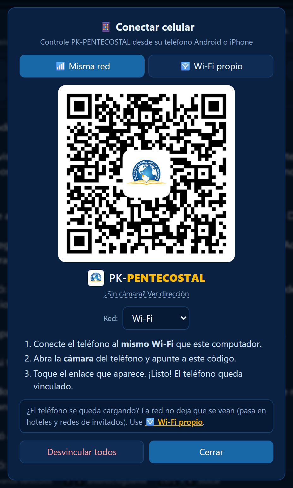
Figura 13. Ventana “Conectar celular”.
Conecte el teléfono al mismo Wi-Fi que el computador (no use datos móviles).
En el panel del computador pulse el botón 📱 Celular, arriba a la derecha.
Abra la cámara del teléfono y apunte al código QR.
Toque el enlace que aparece. Se abre PK-PENTECOSTAL en el teléfono y queda vinculado: las próximas veces basta con abrir la misma dirección.
Opcional: en el menú del navegador elija Agregar a pantalla de inicio (en iPhone: Compartir → Añadir a pantalla de inicio). Queda como una app con el logo de la IPUC.
¿Varias redes?Si el computador está conectado a más de una red, la ventana muestra el selector Red:. Elija la del Wi-Fi donde está el teléfono.
Wi-Fi propio: funciona en cualquier lugar
Algunas redes no dejan que el teléfono vea al computador (hoteles, redes de invitados, algunos routers) y entonces el teléfono se queda “cargando”. Otras veces simplemente no hay Wi-Fi. Para esos casos el computador puede crear su propia red Wi-Fi:
Figura 14. Pestaña “Wi-Fi propio” encendida.
En la ventana 📱 Celular elija la pestaña Wi-Fi propio y pulse Crear Wi-Fi propio. En unos segundos aparece la red PK-PENTECOSTAL.
Escanee el código ① con la cámara del teléfono y toque Conectarse (no hay que escribir la clave).
Escanee el código ② y toque el enlace. ¡Listo!
Bueno saberSi el computador tiene internet, los teléfonos también lo tendrán a través de él. Si el teléfono avisa “Sin internet”, elija Mantener conexión (Android) o Usar sin internet (iPhone). Hasta 8 teléfonos a la vez. El Wi-Fi propio se apaga solo al cerrar el programa. Solo en Windows.
Manejar el programa desde el teléfono
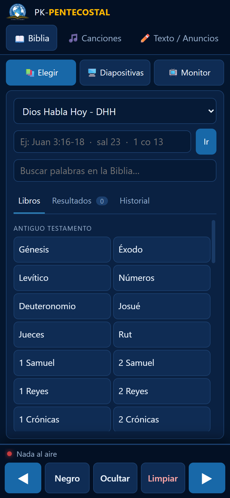
Figura 15. Elegir.
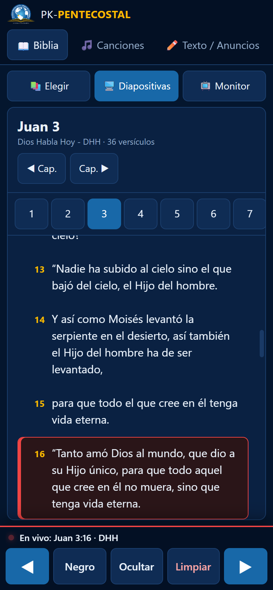
Figura 16. Diapositivas.
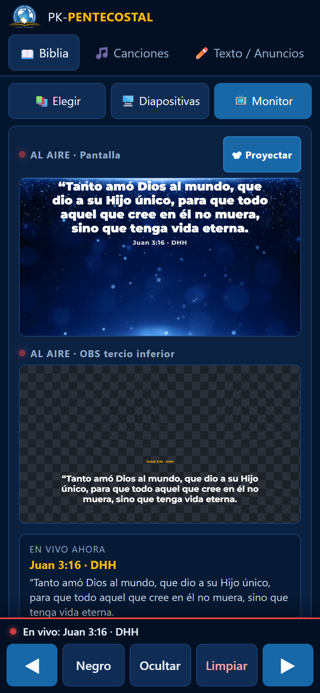
Figura 17. Monitor.
Arriba están las mismas pestañas del computador (Biblia, Canciones, Texto, Fondos, Estilo, OBS, Idiomas); deslice con el dedo para ver todas. Debajo hay tres botones para cambiar de vista:
Vista
Para qué sirve
📚 Elegir
Buscar el libro de la Biblia, la canción o el anuncio. Al tocar uno, el teléfono pasa solo a Diapositivas.
🖥️ Diapositivas
Los versículos o estrofas. Toque uno para proyectarlo. Los capítulos se deslizan de lado en la fila de números.
📺 Monitor
Muestra lo que está viendo la iglesia en el proyector y en OBS.
La barra de abajo está siempre visible y muestra lo que está en vivo:
Botón
Qué hace
◀▶
Versículo o estrofa anterior / siguiente (en la Biblia pasa de capítulo solo).
Negro
Pantalla del proyector en negro. Se ilumina en rojo mientras está activo.
Ocultar
Oculta el texto y deja el fondo.
Limpiar
Quita del aire lo que se está proyectando.
Trabajo en equipoPuede usar el computador y uno o varios teléfonos al mismo tiempo: todo lo que haga uno se ve al instante en los demás.
Seguridad: solo teléfonos vinculados
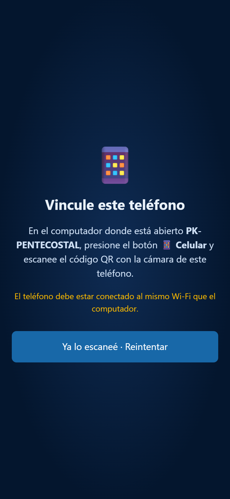
Figura 18. Teléfono sin vincular.
Solo los teléfonos que escanearon el código QR pueden cambiar lo que se proyecta. Si alguien conectado al Wi-Fi de la iglesia escribe la dirección sin haber escaneado el código, verá el aviso “Vincule este teléfono” y no podrá tocar nada.
Para desconectar a todos los teléfonos (por ejemplo, si se perdió un celular), pulse Desvincular todos en la ventana del QR. Se crea un código nuevo y quienes deban seguir manejando el programa tendrán que escanearlo otra vez.
Lo que solo se hace en el computadorMostrar el código QR, desvincular teléfonos, traducir todas las canciones y cerrar el programa (⏻).
Si el teléfono no logra abrir la páginaRevise que ambos estén en el mismo Wi-Fi. La primera vez, Windows puede preguntar si permite el acceso de Node.js a la red: responda Permitir. Si se queda cargando, la red no deja que los equipos se vean entre sí (hoteles, redes de invitados): use el Wi-Fi propio. Más detalles en el capítulo 17.
14Idiomas: el programa en inglésNUEVO
Con la pestaña 🌐 Idiomas todo PK-PENTECOSTAL cambia de idioma en un clic: los menús, los botones, los avisos, las Biblias y las canciones. El cambio se ve al mismo tiempo en el computador, en el proyector, en OBS y en los celulares.
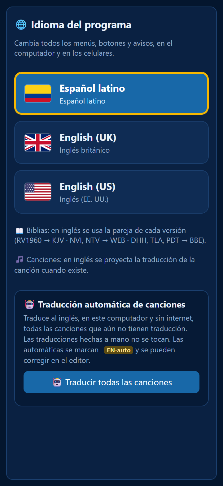
Figura 19. Pestaña Idiomas.
Cambiar el idioma
Haga clic en la pestaña 🌐 Idiomas.
Elija una opción:
Español latino: el programa como siempre.
English (UK): inglés británico (colour, Saviour, honour).
English (US): inglés de Estados Unidos (color, Savior, honor).
Listo: el panel cambia al instante. La opción elegida queda marcada en dorado y se recuerda la próxima vez que abra el programa.
Para cultos bilingüesPuede cambiar de idioma en medio del culto: lo que está al aire se vuelve a mostrar en el idioma nuevo.
Biblias en inglés
En inglés, el programa usa automáticamente la versión en inglés que corresponde a la Biblia elegida en español:
Si eligió en español…
En inglés se usa…
Reina Valera 1960 (RV1960)
King James Version (KJV): la clásica, lenguaje antiguo como la RV1960.
NVI · NTV
World English Bible (WEB): inglés moderno.
DHH · TLA · PDT
Bible in Basic English (BBE): inglés sencillo, fácil de entender.
Las citas se pueden escribir en español o en inglés: juan 3:16, john 3:16, sal 23 y psalm 23 funcionan igual. También puede elegir cualquier versión en inglés directamente en la lista de versiones.
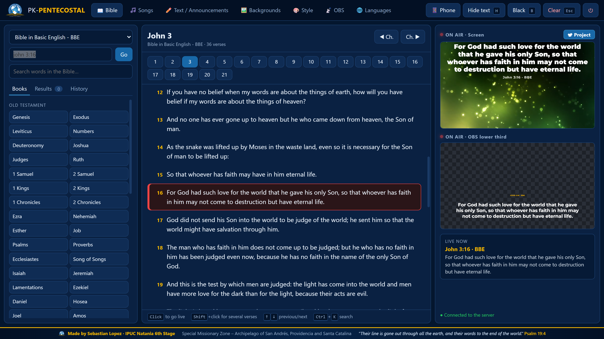
Figura 20. El programa en inglés: John 3:16 al aire.
Canciones en inglés
Las 1.849 canciones de los seis cancioneros tienen su versión en inglés. En modo inglés se proyecta la letra en inglés; en español, la original. En la lista de canciones verá dos etiquetas:
Etiqueta
Significado
EN
Traducción revisada a mano.
EN·auto
Traducción automática, hecha por el traductor del programa. Se entiende bien, pero puede tener errores: revísela antes de usarla en el culto.
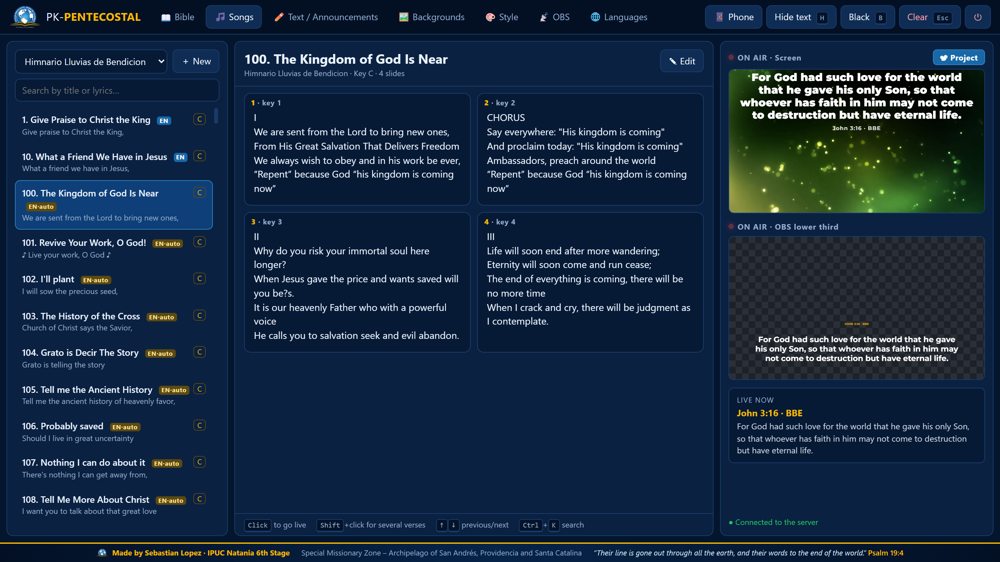
Figura 21. Cancionero en inglés con etiquetas EN y EN·auto.
Corregir o escribir una traducción
Abra la canción y pulse ✎ Editar.
Abajo están Título en inglés y Letra en inglés. Corrija lo que haga falta, respetando una línea en blanco entre estrofas.
Si la canción no tiene traducción, pulse 🤖 Traducir automáticamente y luego revise el resultado.
Pulse Guardar. Al corregirla a mano, la etiqueta cambia de EN·auto a EN y el traductor ya no la vuelve a tocar.
Traductor automático (sin internet)
Las canciones nuevas que usted agregue se traducen solas al guardarlas. Si quiere traducir de una vez todas las que falten:
En la pestaña 🌐 Idiomas, en el cuadro Traducción automática de canciones, pulse 🤖 Traducir todas las canciones.
Una barra muestra el avance. Puede seguir usando el programa mientras tanto, o pulsar Detener.
Bueno saberEl traductor funciona dentro del computador, sin internet. Las traducciones hechas a mano nunca se reemplazan. Las palabras “Señor”, “Coro” y las marcas de repetición //…// se respetan (Lord, CHORUS). Este botón solo está en el computador, no en el celular.
15Atajos de teclado
Tecla
Acción
Clic
Mandar al aire el versículo / estrofa / diapositiva
Shift + clic
Varios versículos juntos
↓→Espacio
Siguiente (en la Biblia pasa de capítulo solo)
↑←
Anterior
1 … 9
Ir a la estrofa / diapositiva número N
Esc
Quitar el texto del aire (Limpiar)
B
Pantalla negra (activar / desactivar)
H
Ocultar texto, dejando el fondo
Ctrl + K
Buscar referencia bíblica o canción
Ctrl + S
Guardar ajustes del módulo OBS
F, F11 o doble clic
En la ventana del proyector: pantalla completa
Windows + P
(Windows) Elegir “Extender” para usar el proyector como segunda pantalla
NotaLos atajos no actúan mientras está escribiendo en un cuadro de texto. Pulse Esc una vez para salir del cuadro y otra vez para limpiar.
16Dónde se guardan los datos y copias de seguridad
Qué
Dónde
Biblias
Carpeta biblias (archivos .bi en español y .txt en inglés). Para agregar una versión, copie su archivo aquí.
Cancioneros
Carpeta cancioneros (un archivo .js por cancionero).
Traducciones al inglés
cancioneros\traducciones (un archivo por cancionero).
Cancioneros en inglés para compartir
cancioneros\CANCIONES: copias de cada cancionero en English US y English UK.
Copias de canciones editadas
PK-PENTECOSTAL\respaldos
Fondos
Carpeta fondos y sus subcarpetas; lo subido desde el panel queda en fondos\Subidos.
Fuentes (tipos de letra)
css\font
Ajustes, estilos, rótulos, textos guardados, idioma, historial y la clave de los celulares
PK-PENTECOSTAL\config.json
Casi todas estas carpetas están ocultas (capítulo 2). El programa las usa sin problema.
Hacer una copia de seguridad
Cierre el programa con ⏻.
En el Escritorio, haga clic derecho sobre la carpeta PK-PENTECOSTAL → Comprimir en archivo ZIP (en Windows 11: Comprimir en… → Archivo ZIP). El ZIP incluye también las carpetas ocultas.
Póngale la fecha al nombre (ej.: Respaldo PK-PENTECOSTAL 2026-11-20.zip) y guarde una copia fuera del computador: memoria USB o Google Drive.
Para restaurar o pasar el programa a otro computador: descomprima el ZIP en el Escritorio, instale Node.js (capítulo 2) y abra PK-PENTECOSTAL.vbs.
Cuide la copiaEl respaldo incluye config.json, con la clave de vinculación de los celulares y la del Wi-Fi propio. No lo comparta. Si se lo da a otra iglesia, pulse luego Desvincular todos en la ventana del QR para que se cree una clave nueva.
17Solución de problemas
Problema
Solución
Dice que necesita Node.js
Instale Node.js versión LTS (capítulo 2) y vuelva a abrir el programa.
“No se pudo iniciar PK-PENTECOSTAL”
El puerto 8888 está ocupado, casi siempre porque el Proyektor original está abierto. Ciérrelo. Para ver el detalle del error, abra PK-PENTECOSTAL.bat.
El panel dice “Conectando…” o “Desconectado”
El servidor se cerró. Vuelva a abrir el programa desde el ícono.
Pulso Proyectar y no pasa nada
El navegador bloqueó la ventana emergente. Permita “Ventanas emergentes” para localhost:8888 (ícono a la izquierda de la dirección) y pulse de nuevo.
La salida se abre en mi monitor, no en el proyector
Revise que el proyector esté en modo Extender (Windows+P) y que el permiso de “Administración de ventanas” esté en Permitir. Si no, arrastre la ventana al proyector y haga doble clic.
El público ve el panel de control
Está en modo “Duplicar”. Pulse Windows+P → Extender.
El texto queda tapado abajo o cortado arriba
Estilo → Posición vertical del texto: suba o baje el texto. También puede aumentar el Margen.
El texto no se lee bien sobre el fondo
Suba Oscurecer fondo, active Sombra o Contorno, o elija un fondo más oscuro.
La pantalla del proyector está negra
Puede estar activado Negro (tecla B) u Ocultar texto (H). Púlselos de nuevo.
Un fondo nuevo no aparece
Verifique el formato (.jpg .png .webp .mp4 .webm) y recargue el panel con F5.
No se guardan las canciones o los ajustes
Probablemente se ocultaron también los archivos de adentro de las carpetas. Muestre los elementos ocultos, abra las Propiedades de la carpeta, quite y vuelva a marcar Oculto eligiendo “Aplicar cambios solo a esta carpeta”… o pida ayuda a quien instaló el programa.
En inglés, una canción sale en español
Esa canción aún no tiene traducción. Ábrala → ✎ Editar → 🤖 Traducir automáticamente → Guardar, o use Traducir todas las canciones (capítulo 14).
Una traducción automática tiene errores
Corríjala en el editor, en Letra en inglés, y guarde. Pasa a ser traducción revisada (EN).
El celular no abre la página
Mismo Wi-Fi (no datos móviles). En la ventana del QR pruebe otra opción en Red:. Permita Node.js en el Firewall de Windows; si hace falta, en PowerShell como administrador: New-NetFirewallRule -DisplayName "PK-PENTECOSTAL" -Direction Inbound -Protocol TCP -LocalPort 8888 -RemoteAddress LocalSubnet -Action Allow. Si se queda cargando (hoteles, redes de invitados), use Wi-Fi propio (capítulo 13).
El celular dice “Vincule este teléfono”
Ese teléfono no está vinculado o se pulsó Desvincular todos. Escanee de nuevo el código QR (botón 📱 Celular en el computador).
OBS no se conecta
Active el servidor WebSocket en OBS (Herramientas) y revise la contraseña. Requiere OBS 28 o superior.
En OBS no se ve nada
Revise la URL de la fuente Navegador y el tamaño 1920×1080. Con la fuente seleccionada pulse Actualizar (refrescar caché).
18Lista rápida para el día del culto
Antes del culto
Encienda el proyector o TV y conéctelo al computador. Windows+P → Extender.
Abra PK-PENTECOSTAL desde el ícono del Escritorio.
Pulse 📽 Proyectar y confirme que la salida aparece en el proyector a pantalla completa.
Elija el fondo del día (pestaña Fondos).
Revise el Estilo: tamaño de letra y posición vertical para que se lea desde atrás.
¿Hay visitantes que hablan inglés? Revise en 🌐 Idiomas que las canciones del día tengan buena traducción.
Prepare los anuncios en Texto / Anuncios y guárdelos.
Busque y deje listas las canciones de la alabanza.
Si hay transmisión: abra OBS, conecte el panel (📡 OBS → ⚙ → Conectar) y revise los rótulos con los nombres del día.
Si va a manejar desde el teléfono: pulse 📱 Celular y escanee el código QR (solo la primera vez).
Pulse Esc para dejar la pantalla limpia hasta que empiece el culto.
Durante el culto
Alabanza: Canciones → clic en la estrofa; ↓ para avanzar; números para repetir el coro.
Predicación: Ctrl+K, escriba la cita, Enter, clic en el versículo.
Oración: H (ocultar texto) o B (negro).
Entre partes del culto: Esc para limpiar.
Desde el teléfono: toque el versículo o la estrofa; use ◀ ▶ de la barra de abajo para avanzar.
Al terminar
Pulse ⏹ Detener para cerrar la ventana del proyector.
Pulse ⏻ y confirme para cerrar el programa.
Apague el proyector.
Una vez al mes, haga una copia de seguridad (capítulo 16).
19Créditos
PK-PENTECOSTAL
Hecho por Sebastian Lopez · IPUC Natania 6° Etapa
Zona Especial Misionera – Archipiélago de San Andrés, Providencia y Santa Catalina
«Por toda la tierra salió su voz, y hasta el extremo del mundo sus palabras.»Salmos 19:4
Software para la proyección de la Palabra y la alabanza en los cultos. Dios les bendiga.